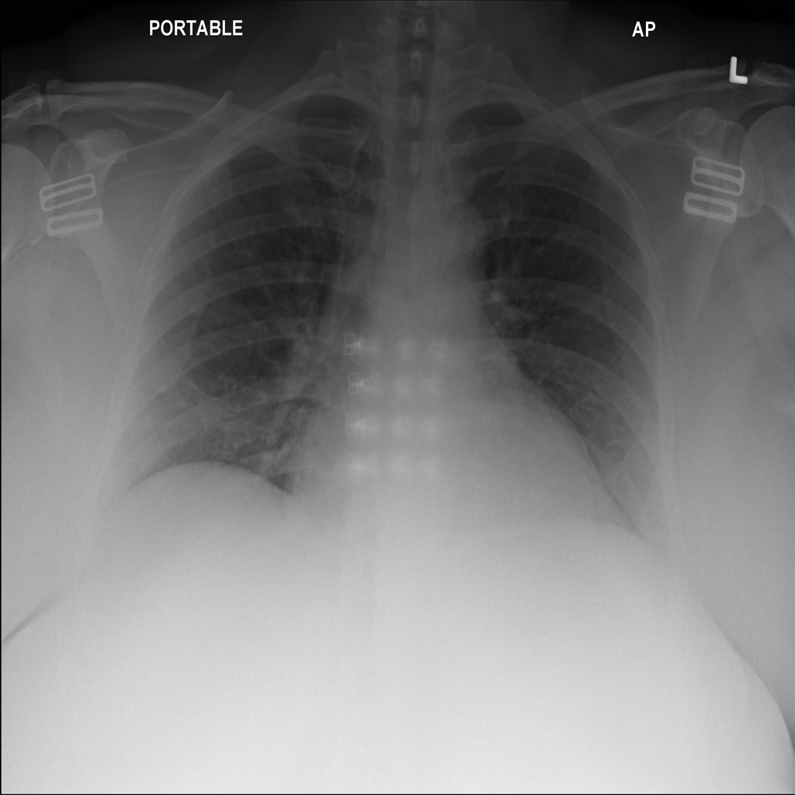
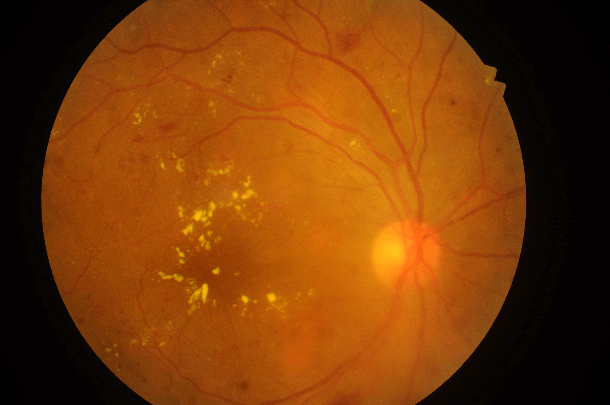
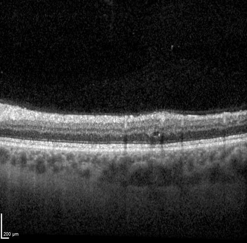

Chest X-ray

Make uncertainty explicit.
A single finding when supported. An unresolved result when it isn’t.
Radiologist reading stays in place.
See the walkthrough Discuss this evaluation ↗Calculated benchmark replay
Medical imaging
We measure uncertainty and control error risk in the AI findings you already use.
Discuss your workflow
A single finding when supported. An unresolved result when it isn’t.
Radiologist reading stays in place.
See the walkthrough Discuss this evaluation ↗Calculated benchmark replay

Fewer extra checks of routine AI results, within a defined error limit.
Referral flags and screening checks remain.
See the walkthrough Discuss this evaluation ↗Prepared workflow · Simulated outcomes

Fewer additional checks before AI findings enter a preliminary draft.
Final clinical review stays in place.
See the walkthrough Discuss this evaluation ↗Prepared workflow · Simulated outcomes
Chest X-ray: NIH ChestX-ray14, provided by the NIH Clinical Center. Wang et al., ChestX-ray8: Hospital-scale Chest X-ray Database and Benchmarks on Weakly-Supervised Classification and Localization of Common Thorax Diseases, CVPR 2017, pp. 3462–3471. Use and attribution. Fundus: IDRiD, Porwal et al., CC BY 4.0. OCT: OLIVES, original dataset CC BY 4.0; author-hosted dataset-viewer JPEGs. Image files are unchanged. Full provenance and source limits are available in each walkthrough.
How often does the answer set miss the expert reference? An actual CheXpert calculation; the NIH practice images are separate.
Inspect the benchmark evidence ↗How many eligible images actually need review? Real IDRiD photographs, with simulated policy and workload results.
Inspect the claim & denominator ↗How many eligible AI findings are incorrect? Real OLIVES scans, with simulated policy and workload results.
Inspect the claim & denominator ↗A possible first engagement
Define the finding, the review step and the errors that matter. Agree on success before evaluating the results.
Pair versioned AI outputs with reviewed references. Compare your current workflow, a tuned alternative and EyeTrustAI.
A retrospective comparison and documented limits, then a decision on a reader study or integration prototype.
EyeTrustAI: statistical design, score compatibility, calibration, comparison and a proposed operating policy.
Your team: clinical definitions, references, continuing review, integration and any deployment approval.
The public walkthroughs are local demonstrations with fictional clinical interfaces. Chest X-ray replays a separate historical calculation; fundus and OCT use prepared outcomes. Clinical connectors, production monitoring and patient-level workflow automation are not provided by these demos.
Existing reviewed examples may be reusable after checks on scope, model version, reference definitions, patient overlap and prior use. Score preparation, labeling, adjudication, integration tests and ongoing audit effort must be scoped. There is no universal label count, installation time or guaranteed saving.
One image or B-scan does not complete an encounter or examination. Clinical owners retain responsibility for ungradable inputs, referral decisions, final reports and follow-up.
Your clinical workflow